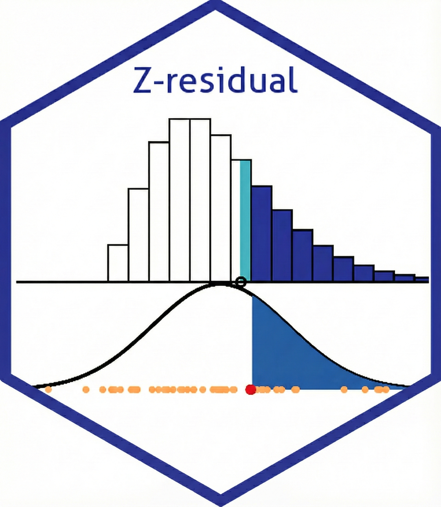

Cross-validated Z-residuals for parametric survival regression models
Source:R/Zresidual_CV_survival_survreg.R
Zresidual_CV_survival_survreg.RdCompute cross-validated Z-residuals for a survival::survreg model. For
each fold, the parametric survival model is refitted using the training
data, and Zresidual() is called on the held-out test data. The fold-wise
residuals are combined into a single cvzresid object.
Usage
Zresidual_CV_survival_survreg(
object,
data,
nfolds = NULL,
foldlist = NULL,
nrep = 1,
randomized = TRUE,
type = NULL,
log_pointpred = NULL,
seed = NULL,
...
)Arguments
- object
A fitted
survival::survregobject.- data
A data frame containing the variables used in
object.- nfolds
Number of cross-validation folds.
- foldlist
Optional list of fold indices. Each element should contain row indices for one held-out test fold, relative to the complete-case data used internally.
- nrep
Number of randomized Z-residual replicates.
- randomized
Logical. If
TRUE, randomized residuals are generated.- type
Optional residual or model subtype passed to
Zresidual().- log_pointpred
Optional prediction backend function.
- seed
Optional random seed.
- ...
Additional arguments passed to
Zresidual().
Details
This function is the parametric survival regression backend used by
Zresidual_CV(). Users usually call Zresidual_CV() directly rather than
calling this backend.